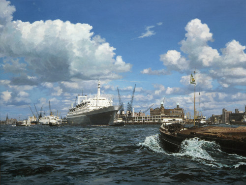
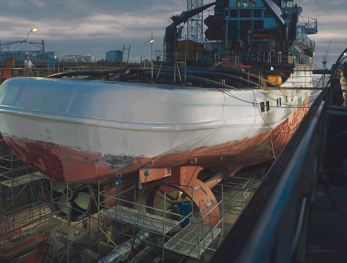
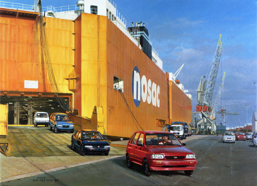
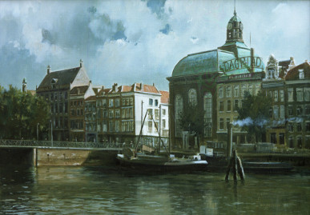
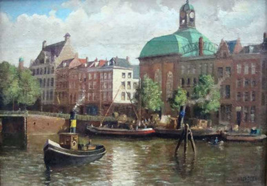
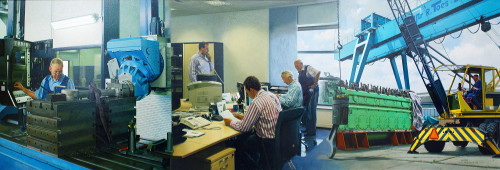
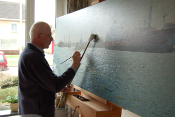
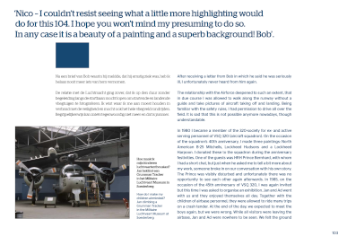
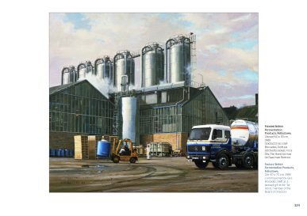

Industrieel en maritiem schilder in Culemborg
Kunst die vaart, rijdt en vliegt.
Schepen, treinen, vliegtuigen en de mensen die ermee werken. Zo gedetailleerd geschilderd dat u er bijna naast staat.
4,7 op Google, 3 reviews

Uit het atelier
Een greep uit het werk. Haven, werf en hangar, geschilderd met oog voor elk detail en voor het licht.




Waar hij zijn onderwerpen vindt
Van de werf tot de hangar, van de spoorwerkplaats tot de kerk. Zoekt u een werk over een bepaald onderwerp? Bel of mail gerust.
- Maritiemschepen, havens, werven
- Spoorwegenstoom, diesel, werkplaatsen
- Luchtvaartvliegtuigen, hangars, onderhoud
-
Industriefabrieken, machines, vakmensen

- Diversenstad, kerk, portret
- Dioramaruimtelijke taferelen

De kunstenaar
Nico M. Peeters schildert de wereld van staal en techniek: schepen in het dok, treinen in de werkplaats, vliegtuigen op het platform. En vooral ook de mensen die daar hun werk doen.
Elk detail klopt, van een klinknagel tot het licht op nat asfalt. Zo krijgen haven, hangar en fabriek iets wat je op een foto zelden ziet: sfeer.
Zijn atelier is aan de Beukeboom in Culemborg. Wilt u langskomen of een werk in het echt zien? Bel of mail dan even vooraf.
Het boek
Een groot deel van zijn werk is gebundeld in een boek: de schilderijen groot afgedrukt, met de verhalen erachter.
Interesse in het boek? Stuur een e-mail of bel.


Wat bezoekers zeggen
4,7 op Google, 3 reviews
"Onlangs brachten wij een bezoek aan de zeer getalenteerde kunstenaar Nico M. Peeters in Culemborg. Wat een indrukwekkende ervaring! Zijn levenswerken komen werkelijk tot leven."
"Prachtig werk van industrieel en maritiem schilder Nico M Peters"
"Buitengewone schilder"
Kom kijken in Culemborg.
Een vraag over een schilderij, het boek of een bezoek aan het atelier? Nico hoort graag van u.
Bel 0345 518 128- Telefoon
- 0345 518 128
- artist@nicompeeters.nl
- Atelier
- Beukeboom 32
4101 VL Culemborg - Bezoek
- Bel of mail even vooraf